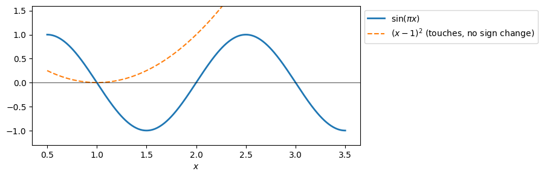
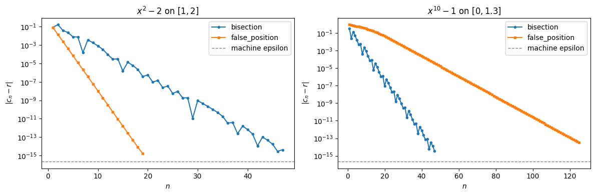
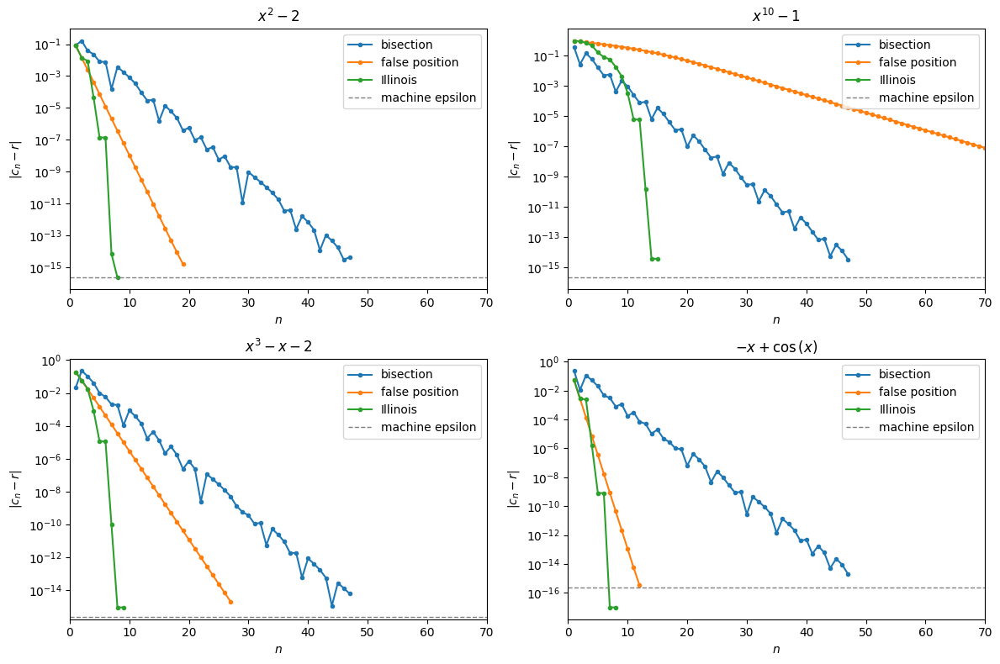

Root Finding I: Bracketing Methods (solutions)#
Contents: 1. the root-finding problem and brackets · 2. bisection · 3. false position · 4. when to stop · 5. comparing the methods · 6. summary · Activity (2 problems)
We use numpy for the numerical methods, sympy for exact answers to check them against, and matplotlib for the error plots. This notebook goes with the slides Root Finding I: Bracketing Methods.
import sympy as sp
import numpy as np
import matplotlib.pyplot as plt
from IPython.display import display, Math
print("sympy", sp.__version__, "| numpy", np.__version__)
---------------------------------------------------------------------------
ModuleNotFoundError Traceback (most recent call last)
Cell In[1], line 1
----> 1 import sympy as sp
2 import numpy as np
3 import matplotlib.pyplot as plt
4 from IPython.display import display, Math
ModuleNotFoundError: No module named 'sympy'
1. The root-finding problem and brackets#
A root (or zero) of \(f\) is a number \(r\) with \(f(r) = 0\). Any equation can be written this way: \(x^2 = 2\) becomes \(f(x) = x^2 - 2 = 0\), and \(\cos x = x\) becomes \(f(x) = \cos x - x = 0\). Most equations have no formula for the root, so we compute a sequence \(c_1, c_2, \ldots \to r\) and stop when it is close enough.
Intermediate Value Theorem. If \(f\) is continuous on \([a, b]\) and \(f(a)\), \(f(b)\) have opposite signs, then \(f\) has at least one root in \((a, b)\). Such an interval is called a bracket.
term |
meaning |
in code |
|---|---|---|
bracket \([a, b]\) |
\(f\) continuous, \(f(a)\) and \(f(b)\) of opposite sign |
|
error \(e_n\) |
distance to the root, \(\lvert c_n - r\rvert\) (needs the root!) |
|
residual |
how far \(f\) is from \(0\), \(\lvert f(c_n)\rvert\) |
|
function evaluation |
one call of |
we count cost in these |
What can go wrong. Both conditions of the theorem matter, so plot \(f\) first.
example |
sign change? |
root? |
what happens |
|---|---|---|---|
\((x-1)^2\) on \([0, 2]\) |
no |
yes, \(x = 1\) |
no bracket: bracketing methods cannot find this root |
\(1/x\) on \([-1, 2]\) |
yes |
no |
\(f\) is not continuous; bisection “converges” to the jump at \(0\) |
\(\sin(\pi x)\) on \([\tfrac12, \tfrac72]\) |
yes |
three: \(1, 2, 3\) |
the method finds one of them |
Finding brackets on a grid. Evaluate \(f\) at \(N + 1\) equally spaced points and keep every sub-interval where the sign changes. The function below does this; we use it again in the activity. (If a grid point hits a root exactly, its sign is \(0\) and both neighbouring sub-intervals are reported; with a “random” \(N\) this rarely happens.)
def find_brackets(f, a, b, N=100):
# Return the list of sub-intervals [x_i, x_{i+1}] of [a, b] where f changes sign.
xs = np.linspace(a, b, N + 1)
s = np.sign(f(xs))
return [(float(xs[i]), float(xs[i + 1])) for i in range(N) if s[i] != s[i + 1]]
def f_sin(t):
return np.sin(np.pi * t)
def f_touch(t):
return (t - 1)**2
print("sin(pi x) on [0.5, 3.5]:", [(round(l, 3), round(r, 3)) for l, r in find_brackets(f_sin, 0.5, 3.5, 7)])
print("(x - 1)^2 on [0, 2] :", find_brackets(f_touch, 0, 2, 7), " <- a root, but no sign change")
xs = np.linspace(0.5, 3.5, 400)
fig, ax = plt.subplots(figsize=(7, 3))
ax.plot(xs, f_sin(xs), lw=2, label=r"$\sin(\pi x)$")
ax.plot(xs, f_touch(xs), "--", label=r"$(x-1)^2$ (touches, no sign change)")
ax.axhline(0, color="k", lw=0.5)
ax.set_ylim(-1.3, 1.6); ax.set_xlabel("$x$"); ax.legend(loc="upper left", bbox_to_anchor=(1, 1))
plt.show()
sin(pi x) on [0.5, 3.5]: [(0.929, 1.357), (1.786, 2.214), (2.643, 3.071)]
(x - 1)^2 on [0, 2] : [] <- a root, but no sign change

2. The bisection method#
Start with a bracket \([a, b]\) and repeat:
take the midpoint \(c = a + \dfrac{b - a}{2}\);
if \(f(a)\) and \(f(c)\) have the same sign, the root is in \([c, b]\): set \(a \leftarrow c\);
otherwise it is in \([a, c]\): set \(b \leftarrow c\).
After every step \([a, b]\) is still a bracket and half as wide, so the midpoint \(c_n\) of step \(n\) satisfies
property |
bisection |
|---|---|
rate |
linear, \(\rho = \tfrac12\): one bit per step, one decimal digit every \(\log_2 10 \approx 3.3\) steps |
cost for tolerance tol |
\(n = \log_2(b-a) + \log_2(1/\text{tol})\) steps, so \(O(\log(1/\text{tol}))\) function evaluations |
error bound |
known before we start, for every continuous \(f\) |
Floating point details in the code below:
a + (b - a)/2instead of(a + b)/2: always lands inside \([a, b]\).np.sign(fc) == np.sign(fa)instead offa * fc > 0: the product can underflow to \(0\).We keep
fa, so each step needs only one new evaluation of \(f\).
Why we do not test fc == 0. \(f(c)\) is itself rounded, so an exact zero almost never happens: the test is too strong to be useful. If it does happen nothing breaks: \(\operatorname{sign}(0) = 0 \ne \operatorname{sign}(f(a))\), so we keep \([a, c]\), which still contains the root \(c\). Testing \(|f(c)| < \text{tol}\) instead measures the residual, not the error (see Section 4). Bisection gives a true error bound for free, so we stop when \((b - a)/2 < \text{tol}\).
The function is the one from the slides, except that it also returns the list hist of all midpoints, so we can plot the errors.
def bisection(f, a, b, tol=1e-12, maxit=200):
fa = f(a)
if np.sign(fa) == np.sign(f(b)):
raise ValueError("[a, b] is not a bracket: f(a) and f(b) have the same sign")
hist = []
for n in range(maxit):
c = a + (b - a) / 2 # midpoint
fc = f(c) # the only new f-evaluation
hist.append(c)
if (b - a) / 2 < tol: # error bound |c - r| <= (b - a)/2 < tol
break
if np.sign(fc) == np.sign(fa):
a, fa = c, fc # root in [c, b]
else:
b = c # root in [a, c]
return c, hist
def f_sq(t):
return t**2 - 2
c, hist = bisection(f_sq, 1, 2, tol=1e-6)
print(f"{'n':>3} {'c_n':>12} {'|c_n - sqrt2|':>14} {'bound 2^-n':>11}")
for n, cn in enumerate(hist[:8], start=1):
print(f"{n:>3} {cn:12.8f} {abs(cn - np.sqrt(2)):14.2e} {2.0**-n:11.2e}")
print(f"\nsteps used: {len(hist)}, predicted: ceil(log2(1/1e-6)) = {int(np.ceil(np.log2(1 / 1e-6)))}")
print(f"final c = {c:.10f}, error = {abs(c - np.sqrt(2)):.1e}")
n c_n |c_n - sqrt2| bound 2^-n
1 1.50000000 8.58e-02 5.00e-01
2 1.25000000 1.64e-01 2.50e-01
3 1.37500000 3.92e-02 1.25e-01
4 1.43750000 2.33e-02 6.25e-02
5 1.40625000 7.96e-03 3.12e-02
6 1.42187500 7.66e-03 1.56e-02
7 1.41406250 1.51e-04 7.81e-03
8 1.41796875 3.76e-03 3.91e-03
steps used: 20, predicted: ceil(log2(1/1e-6)) = 20
final c = 1.4142141342, error = 5.7e-07
3. The false position method#
Bisection ignores the values of \(f\): only their signs are used. False position replaces \(f\) by the secant line through \((a, f(a))\) and \((b, f(b))\) and takes its zero:
Then it keeps the half with the sign change, exactly as bisection does, so \([a, b]\) is still a bracket.
property |
false position |
|---|---|
rate |
linear, but \(\rho\) depends on \(f\) (often much better than \(\tfrac12\), sometimes much worse) |
error bound in advance |
no |
bracket width \(\to 0\) |
not always: one endpoint can get stuck |
stopping test |
the bracket width may never get small, so we stop when the step \(\lvert c_n - c_{n-1}\rvert\) is below tol |
Compared with bisection, only the line that computes c changes, and we now also keep fb.
def false_position(f, a, b, tol=1e-12, maxit=200):
fa, fb = f(a), f(b)
if np.sign(fa) == np.sign(fb):
raise ValueError("[a, b] is not a bracket: f(a) and f(b) have the same sign")
hist = []
c_old = np.inf
for n in range(maxit):
c = b - fb * (b - a) / (fb - fa) # zero of the secant line
fc = f(c)
hist.append(c)
if abs(c - c_old) < tol: # step size test
break
c_old = c
if np.sign(fc) == np.sign(fa):
a, fa = c, fc # root in [c, b]
else:
b, fb = c, fc # root in [a, c]
return c, hist
c, hist = false_position(f_sq, 1, 2, tol=1e-6)
print(f"{'n':>3} {'c_n':>12} {'|c_n - sqrt2|':>14} {'ratio e_n/e_(n-1)':>18}")
e = [abs(cn - np.sqrt(2)) for cn in hist]
for n in range(min(8, len(hist))):
ratio = f"{e[n] / e[n - 1]:18.3f}" if n > 0 else ""
print(f"{n + 1:>3} {hist[n]:12.8f} {e[n]:14.2e} {ratio}")
print("\nThe right endpoint b = 2 is never replaced: the bracket shrinks to [sqrt2, 2], not to a point.")
n c_n |c_n - sqrt2| ratio e_n/e_(n-1)
1 1.33333333 8.09e-02
2 1.40000000 1.42e-02 0.176
3 1.41176471 2.45e-03 0.172
4 1.41379310 4.20e-04 0.172
5 1.41414141 7.21e-05 0.172
6 1.41420118 1.24e-05 0.172
7 1.41421144 2.12e-06 0.172
8 1.41421320 3.64e-07 0.172
The right endpoint b = 2 is never replaced: the bracket shrinks to [sqrt2, 2], not to a point.
4. When do we stop?#
test |
formula |
good |
bad |
|---|---|---|---|
bracket width |
\((b - a)/2 < \text{tol}\) |
a true error bound for bisection |
may never trigger for false position |
step size |
\(\lvert c_n - c_{n-1}\rvert < \text{tol}\) |
works for every method |
not a guarantee |
residual |
\(\lvert f(c_n)\rvert < \text{tol}_f\) |
cheap |
depends on the scale of \(f\); small residual \(\ne\) small error |
exact zero |
\(f(c_n) = 0\) |
almost never happens in floating point |
Always add a maximum number of iterations, and keep tol well above machine epsilon times \(|r|\): below \(\approx 10^{-16}|r|\) there are no floats left between \(a\) and \(b\).
The cell below shows why the residual is a poor stopping test: a flat function has a tiny residual far from its root, and a steep one has a large residual very close to it.
def flat(t):
return (t - 1)**10 # root r = 1, very flat
def steep(t):
return 1e10 * (t - 1) # root r = 1, very steep
print(f"flat : c = 1.1, error = {0.1:.0e}, residual |f(c)| = {abs(flat(1.1)):.0e} <- 'converged' by the residual test")
print(f"steep: c = 1 + 1e-8, error = {1e-8:.0e}, residual |f(c)| = {abs(steep(1 + 1e-8)):.0e} <- 'not converged'")
print("\nfloating point floor: np.spacing(1.0) =", np.spacing(1.0))
flat : c = 1.1, error = 1e-01, residual |f(c)| = 1e-10 <- 'converged' by the residual test
steep: c = 1 + 1e-8, error = 1e-08, residual |f(c)| = 1e+02 <- 'not converged'
floating point floor: np.spacing(1.0) = 2.220446049250313e-16
5. Comparing the methods: plot the error on a log scale#
As in the convergence lecture, plot \(e_n = |c_n - r|\) with plt.semilogy: a straight line means linear convergence, and its slope gives \(\rho\).
Two test problems with known roots: \(x^2 - 2\) on \([1, 2]\) (\(r = \sqrt2\)) and \(x^{10} - 1\) on \([0, 1.3]\) (\(r = 1\)). On the second one, false position is much slower than bisection: \(f\) is flat on the left and steep on the right, so every secant line crosses the axis far to the left of \(r\) and \(b = 1.3\) is never replaced.
def f_ten(t):
return t**10 - 1
problems = [("$x^2 - 2$ on $[1, 2]$", f_sq, 1, 2, np.sqrt(2)),
("$x^{10} - 1$ on $[0, 1.3]$", f_ten, 0, 1.3, 1.0)]
fig, axes = plt.subplots(1, 2, figsize=(12, 4))
for ax, (title, f, a, b, r) in zip(axes, problems):
for method, style in [(bisection, "o-"), (false_position, "s-")]:
_, hist = method(f, a, b, tol=1e-14, maxit=500)
err = np.maximum(np.abs(np.array(hist) - r), 1e-17) # avoid log(0)
ax.semilogy(np.arange(1, len(err) + 1), err, style, ms=3, label=method.__name__)
ax.axhline(np.finfo(float).eps, color="gray", ls="--", lw=1, label="machine epsilon")
ax.set_title(title); ax.set_xlabel("$n$"); ax.set_ylabel(r"$|c_n - r|$"); ax.legend()
plt.tight_layout()
plt.show()

6. Summary#
bisection |
false position |
|
|---|---|---|
new point \(c\) |
midpoint \(a + (b-a)/2\) |
zero of the secant line \(\dfrac{a f(b) - b f(a)}{f(b) - f(a)}\) |
needs a bracket / always converges |
yes / yes |
yes / yes |
rate |
linear, \(\rho = \tfrac12\) |
linear, \(\rho\) depends on \(f\) |
error bound in advance |
\((b - a)/2^n\) |
none |
bracket width \(\to 0\) |
yes |
not always (stuck endpoint) |
natural stopping test |
\((b - a)/2 < \text{tol}\) |
\(\lvert c_n - c_{n-1}\rvert < \text{tol}\) |
\(f\)-evaluations per step |
1 |
1 |
The Illinois method (last slide) fixes the stuck endpoint of false position with one extra rule: if the same endpoint is kept in two steps in a row, halve its stored function value before the next secant step. Halving changes the size of \(f(b)\), not its sign, so \([a, b]\) stays a bracket. You implement it in Problem 2.
Activity#
Two problems. Problem 1 finds the same roots twice, exactly with SymPy’s solveset and numerically with bisection. Problem 2 asks you to implement the Illinois method and race it against bisection and false position. Each step says what your code should do. Write the code in the empty cell, then run the check cell: it prints your results next to the expected ones. Open a Hint box only when you are stuck.
About None and pass: replace None by your answer, and delete pass once you write the body of a function.
Useful commands for this activity
you want to … |
command |
|---|---|
all roots of \(e = 0\) in \([a, b]\), exactly |
|
add to a list / list of lists |
|
the methods |
|
bracket test |
|
Problem 1: exact roots with solveset, numerical roots with bisection#
Goal: use the bracket as the domain of sp.solveset, so SymPy returns exactly the roots inside \([a, b]\); then run bisection on the same brackets and check its error and its number of steps against the theory.
What you will see: SymPy finds \(\sqrt2\), \(1\) and a cubic formula exactly, but for \(\cos x = x\) it can only say “the set of \(x\) in \([0, 1]\) with \(\cos x - x = 0\)”: that is why we need numerical methods. Bisection needs exactly the number of steps the formula \(\lceil \log_2((b-a)/\text{tol}) \rceil\) predicts, whatever the function.
Run the cell below to create the test problems (do not change it). Problem number k (counting from \(0\)) is stored in position k of five lists: its name names[k], its expression exprs[k], its bracket a_list[k], b_list[k] (exact numbers, for SymPy), and its NumPy function funcs[k], ready for bisection (use it with float(a_list[k]), float(b_list[k])). The list r_ref holds an accurate value of each root, computed by SymPy with extra digits; we use it to measure errors.
x = sp.Symbol('x', real=True)
names = ["x^2 - 2", "x^10 - 1", "x^3 - x - 2", "cos x - x"]
exprs = [x**2 - 2, x**10 - 1, x**3 - x - 2, sp.cos(x) - x]
a_list = [1, 0, 1, 0]
b_list = [2, sp.Rational(13, 10), 2, 1]
funcs = []
r_ref = []
for k in range(len(exprs)):
funcs.append(sp.lambdify(x, exprs[k], 'numpy'))
r_ref.append(float(sp.nsolve(exprs[k], x, (a_list[k], b_list[k]), solver='bisect')))
print("reference roots:", r_ref)
reference roots: [1.4142135623730951, 1.0, 1.5213797068045676, 0.7390851332151607]
Step 1: solveset on each bracket#
Write code that:
builds a list
exact1with one entry per test problem: entrykissp.solveset(exprs[k], x, domain=sp.Interval(a_list[k], b_list[k]));displays each name together with its solution set.
Hint
Before the loop, start with an empty list:
exact1 = [].Loop over the problem numbers with
for k in range(len(exprs)):.Inside the loop: make the interval from
a_list[k]andb_list[k]withsp.Interval, callsp.solvesetwith the expression of problemkanddomain=that interval, andappendthe result toexact1.To show the results, loop again over
kand useprint(names[k])anddisplay(...).
exact1 = []
for k in range(len(exprs)):
S = sp.solveset(..., x, domain=...)
...
exact1 = []
for k in range(len(exprs)):
exact1.append(sp.solveset(exprs[k], x, domain=sp.Interval(a_list[k], b_list[k])))
for k in range(len(exact1)):
print(names[k], ":")
display(exact1[k])
x^2 - 2 :
x^10 - 1 :
x^3 - x - 2 :
cos x - x :
# check: compare your results with the expected ones
if exact1 is None:
print("exact1 is still None: write the code in the cell above, then run this cell again.")
else:
print("x^2 - 2 :", exact1[0], " (expected: {sqrt(2)})")
print("x^10 - 1 :", exact1[1], " (expected: {1}; the root -1 is outside the bracket)")
print("x^3 - x - 2 :", type(exact1[2]).__name__, " (expected: FiniteSet, one root given by a cube-root formula)")
print("cos x - x :", type(exact1[3]).__name__, " (expected: ConditionSet, SymPy cannot solve it exactly)")
x^2 - 2 : {sqrt(2)} (expected: {sqrt(2)})
x^10 - 1 : {1} (expected: {1}; the root -1 is outside the bracket)
x^3 - x - 2 : FiniteSet (expected: FiniteSet, one root given by a cube-root formula)
cos x - x : ConditionSet (expected: ConditionSet, SymPy cannot solve it exactly)
Step 2: bisection on the same brackets#
With tol = 1e-10, write code that, for every test problem k,
runs
c, hist = bisection(funcs[k], a, b, tol=tol)witha = float(a_list[k]),b = float(b_list[k]);appends to the list
steps1the number of stepslen(hist), and to the listerr1the errorabs(c - r_ref[k]);prints one line per problem with these two numbers.
The check cell compares your number of steps with the prediction \(\lceil \log_2((b-a)/\text{tol}) \rceil\).
Hint
Same pattern as Step 1, but with two empty lists before the loop.
funcs[k]is a NumPy function, so pass it the end points as floats:float(a_list[k]),float(b_list[k]).bisectionreturns two things, so receive them asc, hist = bisection(...). Do not forgettol=tol.The number of steps is the length of
hist; the error comparescwith the reference root of the same problemk.
steps1, err1 = [], []
for k in range(len(funcs)):
a, b = ..., ...
c, hist = bisection(...)
steps1.append(...)
err1.append(...)
tol = 1e-10
steps1, err1 = [], []
for k in range(len(funcs)):
a, b = float(a_list[k]), float(b_list[k])
c, hist = bisection(funcs[k], a, b, tol=tol)
steps1.append(len(hist))
err1.append(abs(c - r_ref[k]))
print(names[k], ": steps =", steps1[k], ", error =", err1[k])
x^2 - 2 : steps = 34 , error = 4.705502654189786e-11
x^10 - 1 : steps = 34 , error = 5.238676159535771e-11
x^3 - x - 2 : steps = 34 , error = 5.2692739060944405e-11
cos x - x : steps = 34 , error = 3.051980890234063e-11
# check: compare your results with the expected ones
if steps1 is None or err1 is None:
print("Something is still None: write the code in the cell above, then run this cell again.")
else:
for k in range(len(steps1)):
a, b = float(a_list[k]), float(b_list[k])
predicted = int(np.ceil(np.log2((b - a) / 1e-10)))
print(f"{names[k]:>12}: steps = {steps1[k]}, predicted = {predicted}, error = {err1[k]:.1e} (expected: 34, 34, error below 1e-10)")
x^2 - 2: steps = 34, predicted = 34, error = 4.7e-11 (expected: 34, 34, error below 1e-10)
x^10 - 1: steps = 34, predicted = 34, error = 5.2e-11 (expected: 34, 34, error below 1e-10)
x^3 - x - 2: steps = 34, predicted = 34, error = 5.3e-11 (expected: 34, 34, error below 1e-10)
cos x - x: steps = 34, predicted = 34, error = 3.1e-11 (expected: 34, 34, error below 1e-10)
Questions:
Why did we write the bracket of \(x^{10} - 1\) as
sp.Rational(13, 10)and not1.3? Trysp.Interval(0, 1.3)and look at the type of the end point.The four functions are very different, yet bisection takes the same number of steps for all of them. Why?
Problem 2: the Illinois method and the race#
Goal: implement the Illinois method and compare bisection, false_position and your illinois on the four test problems of Problem 1, using the reference roots r_ref to measure the true errors.
What you will see: one extra rule turns the slow, stuck false position into a method that needs only a handful of steps. False position is fast on some problems and very slow on \(x^{10} - 1\); Illinois is never slow; bisection is never fast, but always predictable.
Step 1: implement illinois#
Write a function illinois(f, a, b, tol=1e-12, maxit=200) with the same inputs and outputs as false_position: it returns (c, hist), the last point and the list of all points \(c_1, c_2, \ldots\)
Algorithm. Copy false_position from Section 3 and add a variable side = 0 before the loop: it remembers which endpoint was replaced in the previous step. Then change only the end of the loop:
if \(f(c)\) has the sign of \(f(a)\): replace \(a\) (
a, fa = c, fc); ifside == +1(we also replaced \(a\) last time, so \(b\) is kept twice), halvefb; setside = +1;otherwise: replace \(b\) (
b, fb = c, fc); ifside == -1, halvefa; setside = -1.
Hint
Everything in
false_positionup to and including the linec_old = cstays unchanged; only theif/elseat the end of the loop gets new lines.side = 0goes before theforloop, next toc_old = np.inf, so that it is remembered from one step to the next.In each branch, first replace the endpoint, then test
side(it still holds the value from the previous step), and only then updateside. If you update it first, the test always succeeds.You halve the stored value of the endpoint that was kept, never the one you just replaced.
The
elsebranch is the mirror image of theifbranch: swap the roles ofaandb, and of+1and-1.
if np.sign(fc) == np.sign(fa): # a is replaced by c
a, fa = c, fc
if side == ...: # a was also replaced in the previous step, so b is kept twice
... # halve the stored value f(b)
side = ...
else: # b is replaced by c
...
Debugging: if the check shows different first four points, add print(n, a, b, side) inside the loop and follow the first few steps on \(x^2 - 2\) by hand.
def illinois(f, a, b, tol=1e-12, maxit=200):
fa, fb = f(a), f(b)
if np.sign(fa) == np.sign(fb):
raise ValueError("[a, b] is not a bracket: f(a) and f(b) have the same sign")
hist = []
c_old = np.inf
side = 0 # which endpoint was replaced last: +1 = a, -1 = b
for n in range(maxit):
c = b - fb * (b - a) / (fb - fa) # zero of the secant line
fc = f(c)
hist.append(c)
if abs(c - c_old) < tol:
break
c_old = c
if np.sign(fc) == np.sign(fa):
a, fa = c, fc
if side == +1:
fb = fb / 2 # b kept twice in a row
side = +1
else:
b, fb = c, fc
if side == -1:
fa = fa / 2 # a kept twice in a row
side = -1
return c, hist
# check: compare your results with the expected ones (f_sq(t) = t**2 - 2 is defined in Section 2)
out = illinois(f_sq, 1, 2)
if out is None:
print("illinois returned None: finish the function (and delete the line `pass`), then run this cell again.")
else:
c, hist = out
print("c =", repr(c), " (expected: 1.414213562373095 or ...0951)")
print("steps =", len(hist), " (expected: about 8; false position needs 17 with the same tol)")
print("first four =", [round(v, 6) for v in hist[:4]], " (expected: [1.333333, 1.4, 1.423077, 1.414169])")
c = 1.414213562373095 (expected: 1.414213562373095 or ...0951)
steps = 8 (expected: about 8; false position needs 17 with the same tol)
first four = [1.333333, 1.4, 1.423077, 1.414169] (expected: [1.333333, 1.4, 1.423077, 1.414169])
Step 2: the race, steps to reach an error of \(10^{-6}\)#
Run the next cell (do not change it). It collects the three methods, and their names, in two lists: in Python a function can be stored in a list like any other value, and methods[j](f, a, b) calls method number j. It also defines steps_to(hist, r, tol), which returns the first \(n\) (counting from \(1\)) with \(|c_n - r| < \text{tol}\).
methods = [bisection, false_position, illinois]
method_names = ["bisection", "false position", "Illinois"]
def steps_to(hist, r, tol):
for n in range(len(hist)):
if abs(hist[n] - r) < tol:
return n + 1
return None
Build a list of lists steps3: entry steps3[k] is the list [steps for bisection, steps for false position, steps for Illinois] for test problem k, where each number is steps_to(hist, r_ref[k], 1e-6) and hist comes from running the method on funcs[k], float(a_list[k]), float(b_list[k]) with tol=1e-14, maxit=500. Print one line per problem.
Hint
You need two loops, one inside the other: the outer loop over the problems
k, the inner loop over the methodsj.Before the inner loop, start an empty list
row = []; after the inner loop, append the wholerowtosteps3.methods[j]is a function: call it likebisection, withfuncs[k], the float end points,tol=1e-14andmaxit=500. It returnsc, hist.Each entry of
rowissteps_to(...)applied to thathist, the reference root of problemk, and the tolerance1e-6.
steps3 = []
for k in range(len(funcs)):
a, b = float(a_list[k]), float(b_list[k])
row = []
for j in range(len(methods)):
...
...
steps3.append(row)
print(names[k], row)
steps3 = []
for k in range(len(funcs)):
a, b = float(a_list[k]), float(b_list[k])
row = []
for j in range(len(methods)):
c, hist = methods[j](funcs[k], a, b, tol=1e-14, maxit=500)
row.append(steps_to(hist, r_ref[k], 1e-6))
steps3.append(row)
print(names[k], row)
x^2 - 2 [19, 8, 5]
x^10 - 1 [20, 61, 13]
x^3 - x - 2 [19, 11, 7]
cos x - x [19, 5, 5]
# check: compare your results with the expected ones
if steps3 is None:
print("steps3 is still None: write the code in the cell above, then run this cell again.")
else:
expected = [[19, 8, 5], [20, 61, 13], [19, 11, 7], [19, 5, 5]]
for k in range(len(expected)):
print(f"{names[k]:>12}: [bisection, false position, Illinois] = {steps3[k]} (expected: {expected[k]})")
x^2 - 2: [bisection, false position, Illinois] = [19, 8, 5] (expected: [19, 8, 5])
x^10 - 1: [bisection, false position, Illinois] = [20, 61, 13] (expected: [20, 61, 13])
x^3 - x - 2: [bisection, false position, Illinois] = [19, 11, 7] (expected: [19, 11, 7])
cos x - x: [bisection, false position, Illinois] = [19, 5, 5] (expected: [19, 5, 5])
Step 3: look at the errors#
Run the cell below (do not change it): it plots the error \(|c_n - r|\) of the three methods on the four test problems with semilogy, using your illinois.
if illinois(f_sq, 1, 2) is None:
print("illinois returned None: finish Step 1 first, then run this cell again.")
else:
fig, axes = plt.subplots(2, 2, figsize=(12, 8))
for k in range(len(funcs)):
ax = axes.flat[k]
a, b = float(a_list[k]), float(b_list[k])
for j in range(len(methods)):
c, hist = methods[j](funcs[k], a, b, tol=1e-14, maxit=500)
err = np.maximum(np.abs(np.array(hist) - r_ref[k]), 1e-17)
ax.semilogy(np.arange(1, len(err) + 1), err, "o-", ms=3, label=method_names[j])
ax.axhline(np.finfo(float).eps, color="gray", ls="--", lw=1, label="machine epsilon")
ax.set_xlim(0, 70); ax.set_title(f"${sp.latex(exprs[k])}$"); ax.set_xlabel("$n$"); ax.set_ylabel(r"$|c_n - r|$"); ax.legend()
plt.tight_layout()
plt.show()

Questions:
Halving
fbchanges the secant line. Why does \([a, b]\) still contain a root afterwards?The bisection and false position curves are (roughly) straight lines; the Illinois curve bends down. What does that say about the rates (look back at the convergence lecture)?
You need the root of a new function and know nothing about it except a bracket. Which method would you choose, and why?